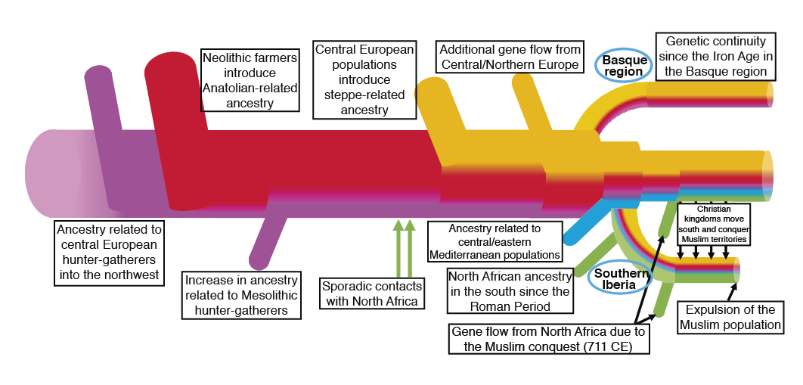
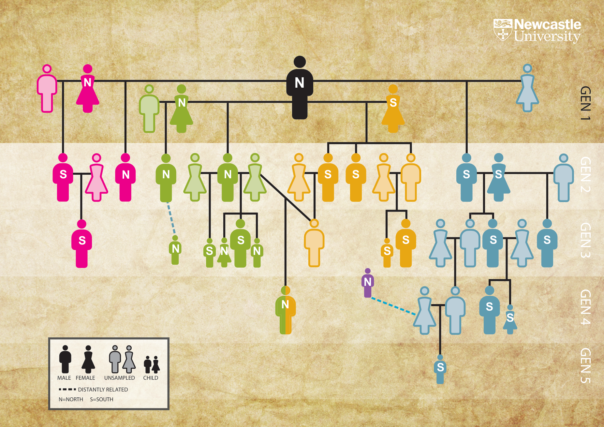

Investigación
De huesos a genomas
La genómica antigua y la genética forense aportan perspectivas complementarias al estudio del pasado humano.
01 / Arqueogenética
Arqueogenética
Colaboramos estrechamente con especialistas en arqueología, antropología e historia para estudiar restos humanos excavados en yacimientos arqueológicos, con especial atención a Europa occidental durante los últimos 10.000 años. Mediante técnicas de secuenciación masiva (NGS), generamos datos genómicos a partir de estos restos óseos y los analizamos utilizando computación de alto rendimiento (HPC) y herramientas bioinformáticas.
Nuestro trabajo integra los datos genómicos con otros métodos biomoleculares y con el contexto arqueológico para estudiar distintas cuestiones sobre el pasado humano: cómo se desplazaron las poblaciones y se mezclaron con otras, cómo la organización social configuró las comunidades humanas, cómo las variantes genéticas de importancia funcional evolucionaron a lo largo del tiempo y cómo afectaron las epidemias del pasado a las sociedades humanas.
Mantenemos una estrecha colaboración con el laboratorio del Dr. David Reich en la Universidad de Harvard, pionero en la aplicación de técnicas de NGS al estudio de la historia humana.
Historia de las poblaciones y movilidad
Investigamos cómo se formaron, desplazaron e interaccionaron las poblaciones a lo largo del tiempo mediante la evidencia genética conservada en los restos arqueológicos.
Parentesco y organización social
Estudiamos las relaciones biológicas junto con las prácticas funerarias y el contexto arqueológico para reconstruir genealogías familiares. Nuestro objetivo es comprender cómo se estructuraban las comunidades, cómo se transmitían las identidades y las posiciones sociales y qué papel desempeñaban las relaciones familiares en las prácticas funerarias y los patrones de residencia.
Selección natural
Los genomas antiguos permiten estudiar la trayectoria temporal de variantes genéticas con importancia funcional, para así comprender su origen y las fuerzas evolutivas que explican su ventaja selectiva.
Enfermedades
El ADN de patógenos antiguos puede recuperarse de restos humanos y, en algunos casos, es posible reconstruir el genoma completo de los microorganismos responsables de enfermedades infecciosas. Esta información aporta una perspectiva complementaria sobre episodios de mortalidad, cambios demográficos, movilidad humana y posibles crisis sanitarias.


02 / Genética forense
y memoria histórica
Genética forense
y memoria histórica
Aplicamos la genética forense a la identificación de víctimas de la Guerra Civil española y contribuimos a los procesos de exhumación, identificación y restitución.
Identificación genética
Durante los últimos 15 años, nuestro laboratorio ha trabajado intensamente en la identificación de restos de víctimas de la Guerra Civil española enterradas en fosas comunes, en colaboración con Gogora (Instituto de la Memoria, la Convivencia y los Derechos Humanos del Gobierno Vasco), Sociedad de Ciencias Aranzadi y otras asociaciones para la recuperación de la memoria histórica. Hasta la fecha, hemos realizado el análisis genético de más de 1.000 restos óseos humanos de la Guerra Civil española y la posterior dictadura, recuperados de fosas de distintas comunidades autónomas.
Familias y memoria
Hemos obtenido un elevado éxito en la obtención de perfiles de ADN, con más de 300 restos óseos identificados y restituidos a sus respectivas familias. Sin embargo, un gran número de restos continúa sin identificar pese a disponer de un perfil genético informativo que puede compararse con muestras de referencia. Esto se debe principalmente a la falta de familiares adecuados para las comparaciones genéticas, dado el tiempo transcurrido desde el final del conflicto y la dificultad de localizar parientes cercanos, como hijos o hijas.
Es necesario intensificar los esfuerzos para aumentar la participación de donantes en todo el territorio. Asimismo, una colaboración más estrecha entre los laboratorios nacionales que intervienen en los procesos de identificación permitiría incrementar el número de identificaciones.
Contacta con el grupo